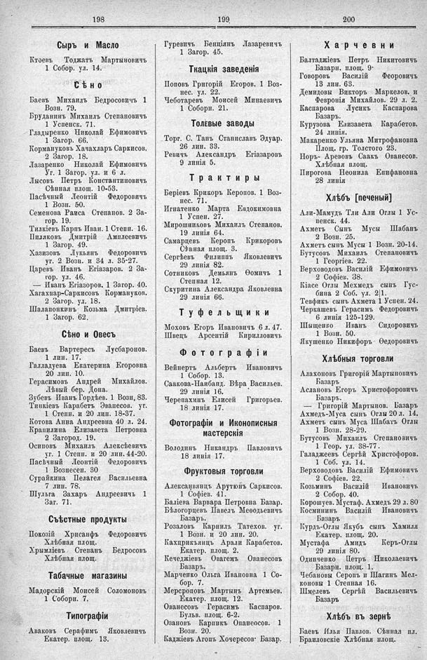

Лист источника 572
Скан

Распознанный текст
198
Сыръ и Масло
Ктоевъ Тоджатъ Мартыновичъ
1 Собор. ул. 14.
Сѣно
Баевъ Михаилъ Бедросовичъ 1
Возн. 79.
Бруданинъ Михаилъ Степановичъ
1 Успенск. 71.
Гладыренко Николай Ефимовичъ
1 Загор. 66.
Кормануковъ Хачахларъ Саркисов.
2 Загор. 18.
Лазаренко Николай Ефимовичъ
Уг. 1 Загор. ул. и 6 л.
Лысовъ Петръ Константиновичъ
Сѣнная площ. 10-53.
Пасѣчный Леонтій Федоровичъ
1 Возн. 50.
Семенова Раиса Степанов. 2 За-
гор. 19.
Тилкіевъ Карпъ Иван. 1 Степн. 16.
Пиляковъ Дмитрій Амплеевичъ
1 Загор. 49.
Хазизовъ Лукьянъ Федоровичъ
уг. 2 Возн. и 34 л. 35-27.
Царевъ Иванъ Егіазаров. 2 За-
гор. ул. 46.
— Иванъ Егіазоров. 1 Загор. 40.
Хагахпар-Саркисовъ Кормануков.
2 Загор. ул. 18.
Шалапонкинъ Козьма Дмитріев.
1 Загор. 62.
Сѣно и Овесъ
Баевъ Вартересъ Лусбаронов.
1 лин. 17.
Галладуева Екатерина Егоровна
20 лин. 10.
Герасимовъ Андрей Михайлов.
Лѣвый бер. Дона.
Зубевъ Иванъ Гордѣев. 1 Возн. 83.
Тинкіевъ Карабетъ Эвапесов. уг.
1 Степн. и 20 лин. 18-37.
Котова Анна Андреевна 40 л. 24.
Крапилина Елизавета Петровна
2 Загород. 19.
Осиповъ Михаилъ Алексѣевичъ
уг. 1 Степн. и 20 лин. 44-20.
Пасѣчный Леонтій Федоровичъ
1 Вознесен. 30
Сурайкина Пелагея Васильевна
7 лин. 78.
Шульга Захаръ Андреевичъ 1
Заг. 71.
Съѣстные продукты
Покозій Хрисанфъ Федоровичъ
Хлѣбная площ.
Хрымліевъ Степанъ Бедросовъ
Хлѣбная площ.
Табачные магазины
Мадорскій Моисей Соломоновъ
1 Соборн. 7.
Типографіи
Аваковъ Серафимъ Яковлевичъ
Екатер. площ. 13.
199
Гуревичъ Бенціянъ Лазаревичъ
1 Загор. 45.
Ткацкія заведенія
Поповъ Григорій Егоров. 1 Воз-
нес. ул. 22.
Чеботаревъ Моисей Минаевичъ
1 Соборн. 21.
Толевые заводы
Торг. С. Танъ Станиславъ Эдуар.
26 лин. 33.
Ревичъ Александръ Егіазаровъ
9 линія 5.
Трактиры
Беріевъ Крикоръ Керопов. 1 Воз-
нес. 71.
Игнатенко Марта Евдокимовна
1 Успен. 27.
Мирошниковъ Михаилъ Степанов.
19 линія 64.
Самарцевъ Керопъ Крикоровъ
Сѣнная площ. 3.
Сергѣевъ Филиппъ Яковлевичъ
29 линія 82.
Сотниковъ Демьянъ Ѳомичъ 1
Степная 12.
Скуритина Александра Яковлевна
29 линія 66.
Туфельщики
Моховъ Егоръ Ивановичъ 6 л. 47.
Швецъ Арсентій Кирилловичъ
Фотографіи
Вейнертъ Альбертъ Ивановичъ
1 Собор. 13.
Саакова-Наибанд. Вѣра Васильев.
29 линія 16.
Черепахинъ Елисей Григорьев.
18 линія 17.
Фотографіи и Иконописныя
мастерскія
Володинъ Никандръ Павловичъ
18 линія 17.
Фруктовыя торговли
Алексанцянцъ Арутюнъ Саркисов.
1 Софіев. 41.
Баліева Варвара Петровна Базар.
Бѣлогорцевъ Павелъ Ѳеодосьевичъ
Базаръ.
Розаловъ Карнилъ Татехов. уг.
1 Возн. и 20 лин. 20.
Кахприкьянцъ Арали Карабетов.
Екатер. площ. 2.
Кечеджіевъ Овагемъ Ованесовъ
Базаръ.
Марченко Ольга Ивановна 1 Со-
бор. 7.
Мерсроповъ Мартынъ Артемьев.
Екатер. площ. 12.
Ованесовъ Герасимъ Каспаров.
Бульв. площ. 6-2.
Озановъ Карникъ Опанеосов. 1
Возн. 20.
Каджіевъ Агопъ Хочересов Базар.
200
Харчевни
Балтаджіевъ Петръ Никитовичъ
Базарн. площ. 9.
Говоровъ Василій Ѳеоровичъ
13 лин. 63.
Демидовы Викторъ Маркелов. и
Февронія Михайлов. 29 л. 2.
Каспарова Лусикъ Каспарова
Базаръ.
Курузова Елизавета Карабетов.
24 линія.
Макаренко Ульяна Митрофановна
Площ. гр. Толстого 23.
Норъ-Аревовъ Саакъ Ованесов.
Хлѣбная площ.
Пирогова Неонила Епифановна
28 линія
Хлѣбъ [печеный]
Али-Мамудъ Тли Али Оглы 1 Ус-
пенск. 44.
Ахметъ Сынъ Мусы Шабанъ
2 Возн. 25.
Ахметъ сынъ Мусы 1 Возн. 20-14.
Бутусовъ Михаилъ Степановичъ
1 Георгіев. 22.
Верховодовъ Василій Ефимовичъ
2 Софіев. 38.
Кіасе Оглы Мехмедъ сынъ Гус-
бина 2 Соб. ул. 2|1.
Тевфикъ сынъ Ахмета 1 Успен. 24.
Черкашевъ Герасимъ Федоровичъ
6 линія 125-129.
Мыщенко Иванъ Сидоровичъ
1 Возн. 50.
Якушенко Никифоръ Ѳедоровичъ
Хлѣбныя торговли
Алахоновъ Григорій Мартыновичъ
Базаръ
Аслановъ Егоръ Христофоровичъ
Базаръ.
— Григорій Мартынов. Базаръ
Ахмедъ-Муса сынъ Оглы 20 л. 14.
Ахметъ сынъ Муса Шабатъ Оглы
1 Возн. 28-29.
Бутусовъ Михаилъ Степановичъ
1 Геор. ул. 38-77.
Галаджеевъ Сергѣй Христофоров.
1 Соб. ул. 14.
Верховодовъ Василій Ефимовичъ
2 Софіев. 22.
Козьминъ Василій Ивановичъ
2 Собор. 40.
Корошуев. Мустаф. Ахмедъ 29 л. 80
Космининъ Василій Ивановичъ
Базаръ
Курдъ-Оглы Якубъ сынъ Хамиля
Екатер. площ. 20.
Мустафа Амидъ Керъ-Оглы
29 линія 80.
Одинченко Петръ Николаевичъ
Базарн. площ. 1.
Чебановы Серопъ и Шагинъ Мел-
коновы 1 Степная 16.
Шмелевъ Сергѣй Васильевичъ
Базаръ
Хлѣбъ въ зернѣ
Баевъ Илья Павлов. Сѣнная пл.
Браиловскіе Хлѣбная площ.